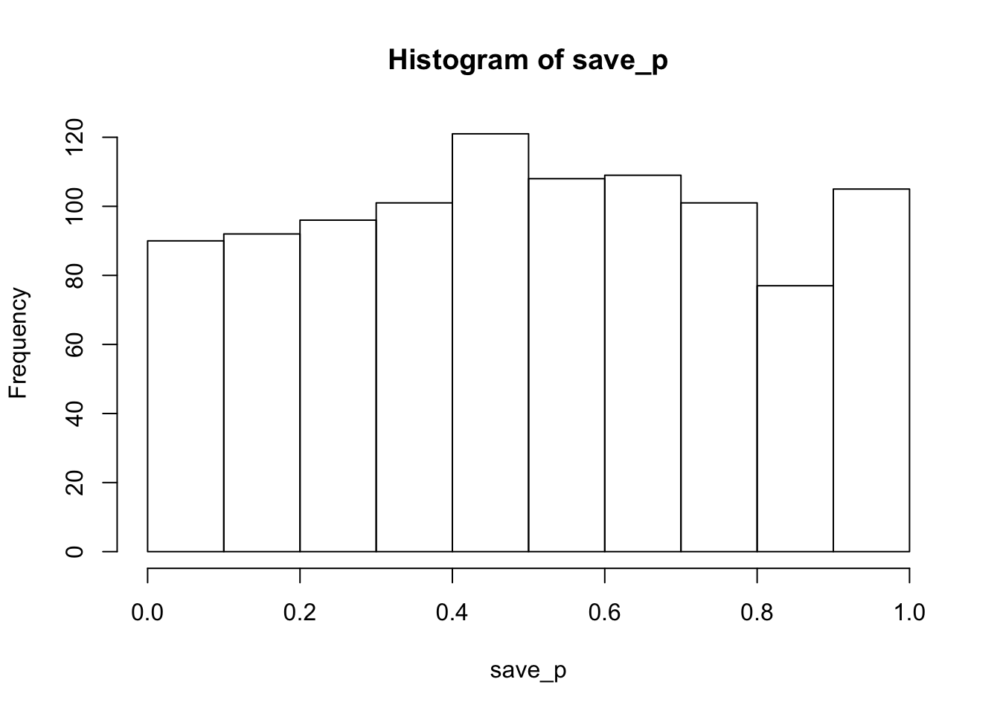
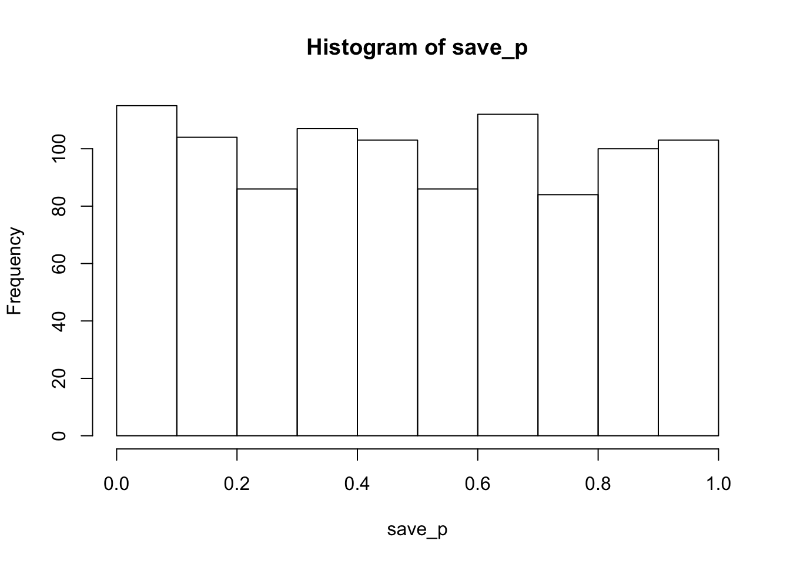

Various musings
Why is the p-distribution flat under the null?
The \(p\)-distribution is flat under the null, it is made to be this way. Let’s understand why. First, a simulation to show that the \(p\)-distribution is flat under the null. We start with the null distribution. Here, I sampled data from a normal (u=0, sd=1), ran a t-test, saved the \(p\)-value, repeated 1000 times, then put the \(p\)-values into a histogram. You can see it’s mostly flat across the range 0-1.
library(ggplot2)
save_p<-length(1000)
for(i in 1:1000){
save_p[i] <- t.test(rnorm(20,0,1))$p.value
}
hist(save_p)
Roughly, this means you are just as likely to get a \(p\)-value between 0 and 0.05, as you are to get one between .95 and 1. This is one reason why the size of the \(p\)-value does not allow you to have more or less evidence for the null, because under the null, you have the same chances of getting any \(p\)-value. A \(p\)-value of 0.9 does not give more evidence for the null than a \(p\)-value of .5.
Ok, so the simulation shows that the \(p\)-distribution is flat under the null, but why is it flat? The \(t\)-distribution isn’t flat. Aren’t \(t\)’s around 0 the most frequently occurring values? Aren’t those \(t\)’s associated with particular \(p\)-values, shouldn’t those particular \(p\)-values occur with the same frequency as their associated \(t\)s? This way of thinking is a bit of a trap, it might be one reason why people would expect the \(p\)-distribution to go up and down.
\(p\)’s are not the probability of specific \(t\)’s
Perhaps a common misinterpretation of \(p\)-values is that they represent the probability of getting a particular \(t\)-value. This is not what they represent. Instead, \(p\)’s represent ranges of t-values. Some examples:
When \(t\) = 0, \(p\) = 1. Obviously you do not have a 100% chance of getting a \(t\) of 0 every time under the null. Instead, you have a 100% chance of getting a \(t\) that is 0 or larger (in absolute value) than 0.
Under a two-tailed test, when \(p\) = .95, this does not mean you have a 95% chance of getting the specific \(t\) you observed. It means you have a 95% chance of getting the \(t\) you observed or greater (absolute value).
The percentage of \(t\)’s associated with the \(p\)-range: .9 and .95 are 5% of the total \(t\)’s. The percentage of \(t\)’s associated with the \(p\)-range: .5-.55 are 5% of the total \(t\)’s. The percentage of \(t\)’s associated with the \(p\)-range: .05 - 0 are 5% of the total. It’s always 5%. If you split up the \(t\)-distribution into regions of 5%, then there are 20 regions, each having the same proportion of t-values. These regions are the p-values, and they are why the p-distribution is flat.
Let’s look at the \(t\)-distribution, and see how it is split up into p-values. Here’s the \(t\)-distribution for the null (1000 simulations).
save_t<-length(1000)
for(i in 1:1000){
save_t[i] <- t.test(rnorm(20,0,1))$statistic
}
qplot(save_t)+
geom_histogram( aes(bins=50), color="white")+
theme_classic()
The \(t\)-distribution is certainly not flat. Most \(t\)’s are around 0, and larger or smaller \(t\)’s happen with increasingly smaller frequency.
The whole point of the \(t\)-distribution is to show the behavior of \(t\) under the null. Once we obtain the distribution, we then apply decision boundaries to the distribution (at least under some philosophies). The \(p\)-distribution is defined by how the decision rules are applied. And, the way we apply the rules makes the \(p\)-distribution flat.
For example, let’s say we want to only have two decisions boundaries, A and B. It would look like this:
qplot(save_t)+
geom_histogram( aes(bins=50), color="white")+
geom_vline(xintercept=0, color="red", size=2)+
annotate("text", x=-2.5, y=100, label="A (50%)")+
annotate("text", x=2.5, y=100, label="B (50%")+
theme_classic()
Under the null, you would make Decision A half of the time, and Decision B half of the time. If you simulated this a bunch of times, got a t-value, then saved your decision (A or B), and then made a bar plot of the number of times you said A or B, it would be roughly flat.
Let’s do the above, but instead of splitting into two equal regions of 50%. We split the t-distribution into equal regions of 5%. This creates 20 regions. In the figure, the white space between each red line shows where 5% of \(t\)’s will be found.
ordered_t<-sort(save_t)
spacing<-ordered_t[seq(0,1000,50)]
spacing[1]<--4
spacing[20]<-4
qplot(save_t)+
geom_histogram( aes(bins=50), color="white")+
geom_vline(xintercept=spacing, color="red", size=1)+
annotate("text", x=-2.5, y=100, label="5%")+
annotate("text", x=2.5, y=100, label="5%")+
theme_classic()
If you used these decision regions, you would find \(t\)’s inside each band 5% of the time. The bands have different widths to accommodate the fact that \(t\)’s have different probabilities across the range.
This top graph is a little deceiving with respect to two-tailed t-testing. We could see things a little more clearly if we plotted the absolute value of \(t\)’s. This will make a right skewed histogram, with t starting at 0 and getting bigger. We can apply the same 20 regions.
ordered_t<-sort(abs(save_t))
spacing<-ordered_t[seq(0,1000,50)]
spacing[1]<-0
spacing[20]<-4
qplot(abs(save_t))+
geom_histogram( aes(bins=50), color="white")+
geom_vline(xintercept=spacing, color="red", size=1)+
annotate("text", x=3, y=100, label="5%: this bin is \n p<=.05")+
annotate("text", x=1.9, y=100, label="5%")+
annotate("text", x=1.65, y=100, label="5%")+
annotate("text", x=1.45, y=100, label="...")+
theme_classic()Make a free Introductory Cognitive Psych textbook with online experiments
I recently wrote this proposal, plan is to do it during fall 2018-Spring 2019.
From my email correspondence (note to self to edit this later):
Create a new OER intro textbook for Cognitive Psychology, essentially from scratch. As I mentioned earlier, I have scoured the web for suitable existing OER material to build off of, but this area is lacking in OER content. So, I (and or a group of collaborators) would have to write the content for the proposed textbook. I would imagine the writing process would take 6-8 months. The book would be delivered in the same web-book format I have been using for other OERs, using the bookdown package
- Create online interactive experiments and embed them into the web-book.
- Teaching students about the field of Cognitive Psychology primarily involves explaining how researchers use experiments to test theories of cognitive processes (how people learn, remember, pay attention, perceive, make decisions, etc.). Foundational concepts usually come in the unit of an experimental finding. To understand the concept, students must understand the question the experiment was asking, the method used to conduct the experiment, the result obtained from the experiment, and the inference made from the result about the original question.
- Standard print textbooks can describe some of the above to students, but they can’t give students the experience of what it is like to be a participant in a particular experiment. And, when students lack concrete understanding about what happened in an experiment, they often fail to grasp how to interpret the results. Some textbooks come with a pay-to-use online experiment platform. We’ll make a free one.
- Fortunately, many important experiments in Cognitive Psychology that are taught in intro classes can be programmed and implemented in web-browsers (and, I have expertise in this area because my lab has pioneered the use of web-browsers for running cognitive psychology experiments). This means that when a foundational experiment is introduced in the textbook, as a part of learning about the experiment, a student would participate in the experiment themselves via their web-browser. Using Shiny we would also be able to present student-generated experimental results alongside the classic findings.
To summarize, I would plan to write a textbook and write interactive online experiments for each chapter
[let’s see if that happens]
How do I use R to list my publications on this webpage?
Maybe get them to auto print from a .bib file. That way I can update everything in Zotero, output a .bib file, then automatically list everything… hmmm…
How about testing this here and seeing what happens.
- Get .bib file from Zotero library of my papers, put it in this folder.